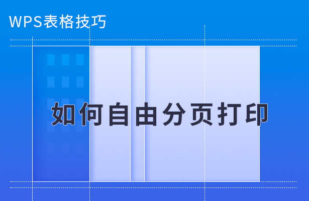
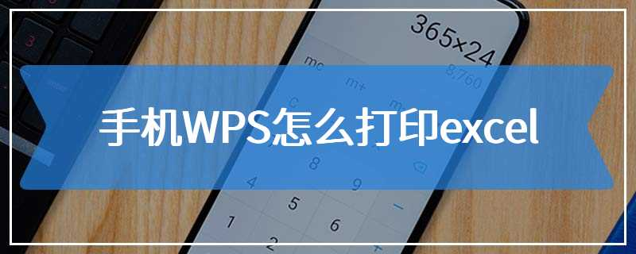
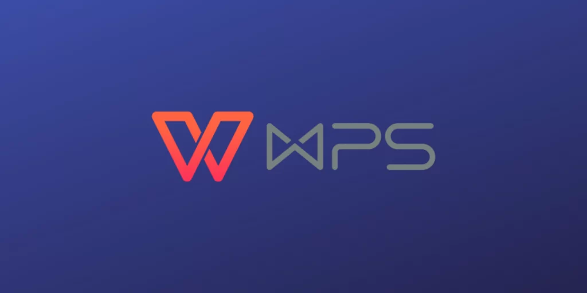

WPS如何打印Excel？
2025年3月9日
在WPS中打印Excel文件，首先打开文件并点击左上角的“文件”按钮，选择“打印”。在弹出的打印设置窗口中，选择打印机、调整页面设置（如纸张大小、边距等），预览打印效果。确认无误后，点击“打印”即可开始打印Excel文件。

WPS打印Excel文件的基本步骤
如何选择打印机和纸张设置
- 选择打印机：在WPS中打开Excel文件后，点击左上角的“文件”按钮，选择“打印”。在弹出的打印设置窗口中，从“打印机”下拉菜单中选择需要的打印机设备。如果没有找到打印机，可以检查设备连接情况或刷新列表。
- 设置纸张大小：在“打印”设置中，选择合适的纸张大小。默认通常是A4纸，用户可以根据需求选择其他纸张尺寸（如A3、信纸等）。确保选择的纸张与打印机支持的纸张一致。
- 选择打印份数和页面范围：除了选择打印机和纸张设置外，用户还可以在打印设置窗口中选择打印的页数范围（例如全部页面、当前页或指定页）。可以选择打印一份或多份文件，便于大批量打印。
Excel文件的页面布局设置
- 调整页面方向：在WPS打印设置中，页面方向可以选择“纵向”或“横向”。如果Excel表格宽度较大，建议使用横向布局，这样可以避免数据被截断。选择页面方向后，用户可以实时预览效果，调整到最佳布局。
- 设置页边距：页边距是影响打印效果的重要因素。WPS提供了标准、窄边距和自定义三种选择。自定义设置可以让用户根据需要精确调整边距大小，确保打印内容不会被切割。
- 调整缩放比例：如果Excel表格内容较多，用户可以调整缩放比例以适应打印页面。例如，选择将所有内容缩放至一页或在两页中打印，避免表格内容溢出页面之外。WPS还提供“适应一页宽度”等快速选项，便于快速调整。
如何设置打印区域和页边距
如何选择打印区域
- 手动选择打印区域：在Excel文件中，用户可以通过鼠标拖动选择要打印的区域。选定区域后，点击“页面布局”菜单中的“设置打印区域”按钮，选定的区域就会被标记为打印区域，避免打印不需要的部分。
- 通过名称框设置打印区域：除了手动选择，用户还可以在Excel的名称框中输入需要打印的区域范围（例如“A1:D20”），然后按回车键，选中的区域将被指定为打印区域。
- 清除打印区域：如果想重新设置打印区域，用户可以选择“页面布局”中的“清除打印区域”选项，取消当前设置的区域后，再重新选择所需区域进行打印。
调整页边距和打印方向的技巧
- 调整页边距：在WPS Excel中，用户可以通过“页面布局”菜单中的“边距”选项调整页边距。可以选择“普通”、“窄”或“宽”边距，或者选择“自定义边距”来设置精确的上、下、左、右边距，从而确保打印内容不会被截断。
- 设置页面方向：用户可以根据表格的内容选择合适的打印方向。点击“页面布局”中的“方向”按钮，选择“纵向”或“横向”打印方向。如果Excel表格较宽，通常选择横向打印会更适合，避免内容被裁切。
- 调整打印方向与内容缩放：如果表格内容太多，用户可以选择调整缩放比例，使表格适合打印页面。例如，在“页面布局”中选择“适应一页宽度”选项，WPS会自动调整打印比例，确保内容完整显示在打印页面上。

WPS Excel文件的打印预览功能
如何使用打印预览查看效果
- 访问打印预览界面：在WPS Excel中，点击左上角的“文件”菜单，选择“打印”选项。进入打印设置界面后，系统会自动展示打印预览，用户可以清晰查看打印效果。
- 检查页面布局：打印预览会展示文档的每一页，用户可以滚动查看所有页面，确保内容不会被截断。特别是对于长表格或多个页数的文件，预览帮助检查打印内容是否完整。
- 调整打印设置：在打印预览界面中，用户可以调整一些打印选项，例如纸张大小、页边距、页面方向等，确保打印效果符合需求。如果需要，还可以实时查看修改后的预览效果。
打印预览中的常见调整方法
- 调整页边距和纸张大小：在打印预览界面，用户可以通过“页面设置”调整页边距的大小，选择“窄边距”、“标准边距”或“自定义边距”。此外，用户还可以选择不同的纸张大小，如A4、A3等，确保内容适应所选纸张。
- 选择页面方向：如果在预览中发现页面内容过宽或过长，可以在打印预览界面中调整页面方向。选择“纵向”或“横向”打印方向，横向打印通常适用于内容较宽的表格，避免数据被裁剪。
- 缩放调整：打印预览提供了缩放功能，用户可以选择“适应一页”或“适应宽度”来调整打印比例，确保表格内容完整显示在页面上。用户还可以通过自定义缩放比例来精确控制内容的显示方式。
如何打印选定内容而非整个工作表
打印选定单元格的步骤
- 选择要打印的区域：首先，在Excel表格中用鼠标选中你希望打印的单元格区域。可以通过拖动鼠标或使用键盘快捷键（如Shift+箭头）来选择多个单元格。
- 进入打印设置：选定内容后，点击“文件”菜单，选择“打印”选项，进入打印设置界面。WPS Excel会默认打印整个工作表，但你可以在设置中选择打印选定的区域。
- 选择打印选定内容：在打印设置界面中，找到“打印范围”选项，选择“选定区域”。这样，系统就会只打印你选定的单元格内容，而不是整个工作表。完成设置后，点击“打印”按钮即可开始打印。
自定义打印区域的方法
- 设置打印区域：在Excel中，如果你不想每次都手动选择打印内容，可以通过设置打印区域来保存自定义选择。首先，选中需要打印的单元格区域，然后点击“页面布局”菜单中的“设置打印区域”按钮。
- 清除和调整打印区域：如果你需要更改打印区域，点击“页面布局”中的“清除打印区域”选项，然后重新选定新的区域并设置为打印区域。调整后的打印区域将被保留，直到你做出新的修改。
- 使用多个打印区域：在一些复杂的表格中，用户可能需要选择多个不连续的区域进行打印。在这种情况下，按住Ctrl键并依次选中多个区域，然后设置为打印区域。这样，WPS会将所有选定区域一起打印，而不是整个工作表。

WPS Excel的分页符设置
如何插入分页符
- 手动插入分页符：在Excel中，用户可以通过选择某一行或列的位置来插入分页符。点击需要插入分页符的位置，然后选择“页面布局”菜单中的“分页符”选项，点击“插入分页符”即可。在此位置，Excel会插入一个新的分页符，开始新的一页打印。
- 快速插入水平或垂直分页符：若要插入水平分页符，选择需要分页的位置所在行；若要插入垂直分页符，则选择列的位置。通过手动插入分页符，用户能够精确控制打印内容的分布。
- 自动分页符设置：如果不想手动插入分页符，Excel还可以根据内容自动插入分页符。用户可以通过调整“页面布局”中的“自动分页符”设置，让Excel根据数据的大小和纸张尺寸自动分隔页面。
设置分页符以优化打印效果
- 调整分页符位置：分页符的精确位置决定了打印内容如何分布。用户可以拖动插入的分页符，手动调整分页符的位置，确保每页的打印内容符合设计要求。特别是在打印长表格或多列内容时，合理设置分页符可以避免数据被截断。
- 查看分页符：在“视图”菜单中，用户可以选择“分页预览”模式查看当前页面的分页效果。在此模式下，分页符将以虚线的形式显示，用户可以直接拖动和调整分页符的具体位置，以优化每页的内容显示。
- 优化分页设置：为了优化打印效果，用户可以在分页符设置时，考虑纸张的大小和边距，避免出现页面内容溢出或内容不对齐的情况。通过调整页边距和缩放比例，用户还可以确保每一页的打印效果更加完美。
WPS如何打印Excel时，如何调整打印范围？
在WPS中打印Excel文件时，可以通过设置打印区域来调整打印范围。首先，选中需要打印的单元格区域，然后点击“页面布局”中的“设置打印区域”按钮，这样Excel就只会打印选定的部分，而不是整个工作表。
WPS打印Excel时，如何确保内容不会被截断？
为了确保打印内容不被截断，可以通过调整页面边距和纸张方向来优化打印效果。在“页面布局”中选择合适的纸张大小和方向（如横向），并设置合适的页边距，同时使用打印预览查看效果，避免内容溢出页面。
如何在WPS打印Excel时打印选定的页数？
在WPS打印Excel时，可以通过设置打印范围来打印指定的页数。在“打印设置”界面，选择“页数范围”，可以选择打印整个工作簿、当前页或指定页数，方便打印特定部分的内容。
上一篇：
WPS如何使用格式刷？
最新文章
如果WPS未保存文档并意外关闭，可以通过“自动恢复”功能尝试找回数据。打开WPS…
在WPS中打印Excel文件，首先打开文件并点击左上角的“文件”按钮，选择“打印…
在WPS中使用格式刷，首先选中已设置好格式的单元格或文本，点击“开始”菜单中的“…
打开WPS Office，点击左上角“WPS文字”或“WPS表格”菜单。选择“选…
WPS PDF的目录功能位于左侧面板。在打开PDF文件后，点击界面左侧的“目录”…
要删除WPS网盘图标，首先右键点击桌面上的WPS网盘图标，选择“删除”或“卸载”…